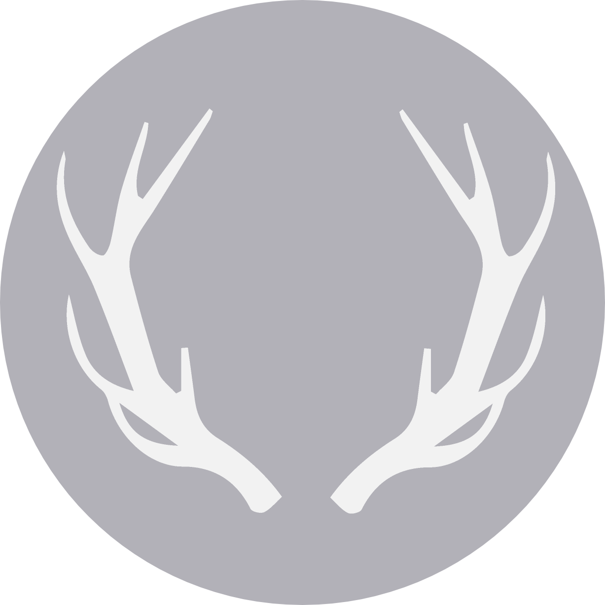
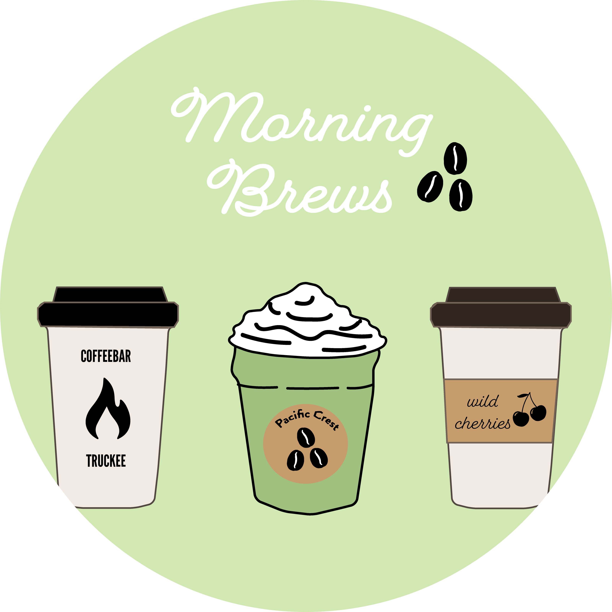

Digital Art

I became interested in design while working in SaSS and seeing first hand
how product features affect clients' productivity and satisfaction level
with the technology. I became passionate about exceptional
user experience, and wanted to learn how to create it myself.
Morning Brews

Recently, I've become interested in digital art, and have grown to like
Adobe Illustrator. I spend some of the free time I have creating
projects using the software, and this icon to the right is an example
portaying some of my favorite coffee shops.
Outdoors
I spend a lot of time outside, and really enjoy nature. I've visited
Acadia, the Everglades, Zion, Redwood, Rocky Mountain, and Shenandoah National Parks, and am hoping
to visit more National Parks in the near future.